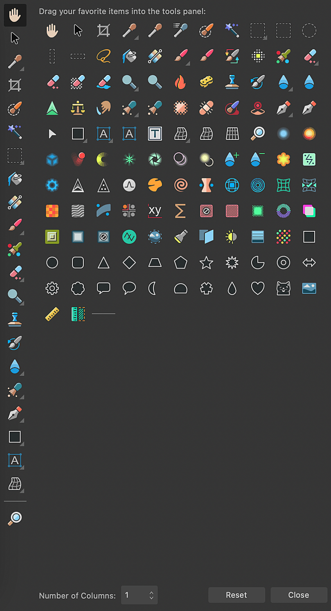

The Tools panel contains the tools available in the active Persona, and is presented vertically to the left of your workspace.

The panel can be customized to add or remove tools to suit your way of working.
In the Photo Persona, stroke and fill color selectors are available below the tools, along with an arrow that swaps their colors.
Here, you can change the number of columns the tools appear in, add or remove tools from view, as well as Reset it to its default state.